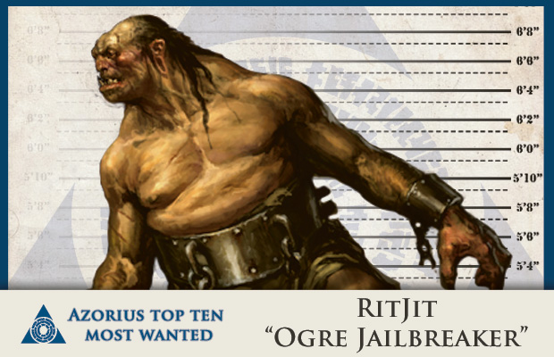
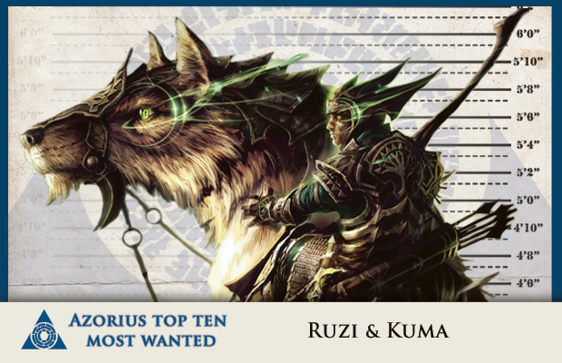
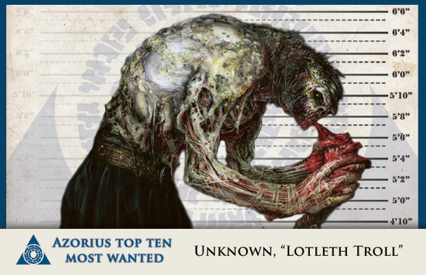
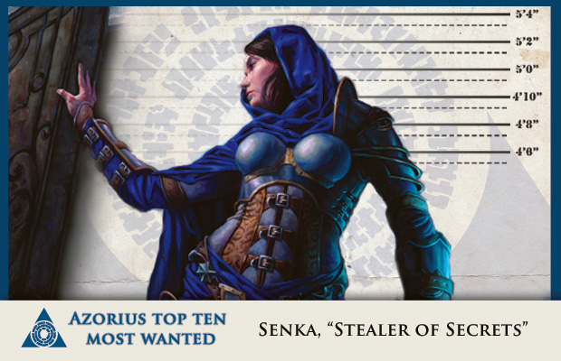
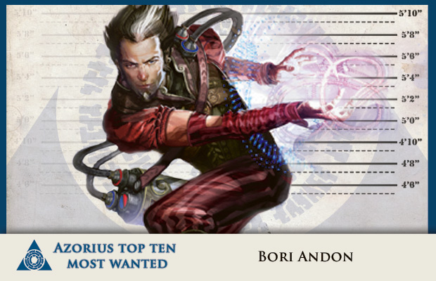
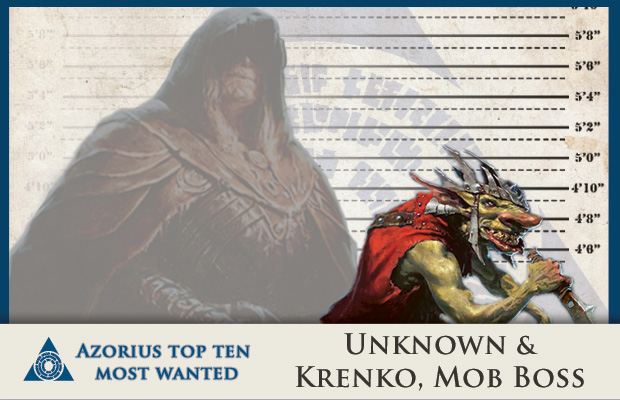
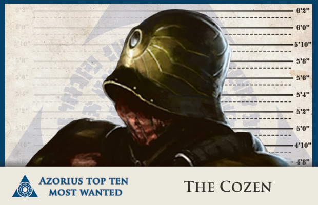
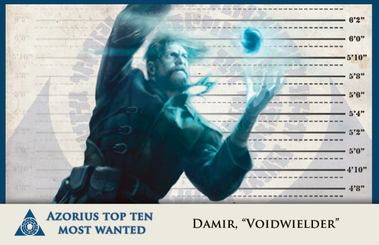
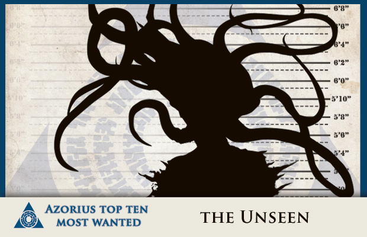
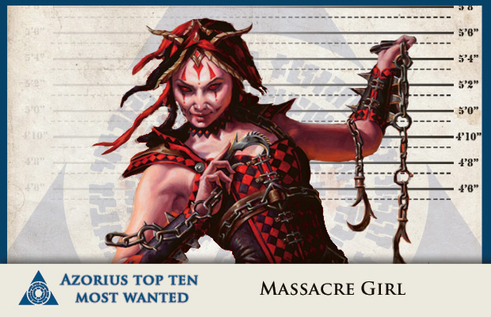

None
Origins unknown. Verbal capacity is highly limited. After a series of petty crimes, the suspect attacked Vitu-Ghazi , where he breached the outer defenses of the Selesnya guildhall. He was driven out by a contingent of Wolf Riders but continued his rampage at Tin Street Market. He destroyed 81% of the stalls in less than twenty minutes. The suspect then became distracted by an overturned vegetable cart and was detained without further incident. He spent three years in a cell before smashing the door with the iron ball chained to his foot. He was last seen in the vicinity of the Selesnya Saproling Nursery.
Destroying Azorius property with Azorius property; consumption of sentient plant matter.
Selesnya (previously)
An alarm-ward alerted guards that a suspect had illegally entered the South Records Hall. By the time the Arresters arrived, the hall was partially engulfed in flames. The Arresters did a sweep of the building and encountered an elf exiting the criminal records sector. They gave chase, but the suspect escaped to the rooftop where a giant wolf waited. The wolf attacked the guards and then the suspects fled onto the neighboring rooftops. On investigation, it was discovered that the fugitives stole files pertaining to the Cult of Rakdos and set fires that did substantial damage to the second floor.
Arson; using a trained wolf as a deadly weapon; transporting contraband across rooftops.
Golgari
The Golgari often uses trolls as "clean-up" crews for corpses. Many are solitary creatures and aggressive only when threatened. The troll in question had a habit of meeting corpse haulers at the Felden Pipe Entrance to "claim" the corpses. But he grew tired of eating corpses and began eating the corpse haulers. He grew tired of the corpse haulers and began eating random citizens. His hunting patterns have effectively shut down all nighttime transport in the canal district. He eludes capture through the pipes. We believe the Golgari are protecting him.
Non-ritualistic cannibalism.
Unknown
Although the Dimir claim their Dinrova Building is open to the public, in fact only the lobby has unlimited access. The upper floors and the basement are protected by strong wards and traps. Dimir officials claim the suspect eluded all safeguards and entered the heavily protected basement. She then brazenly exited the lobby carrying a lumpy bundle described as "moving." To ensure her smooth departure past the guards, she released one of the horrors that inhabit the basement. The horror devoured the guards, escaped the building, and consumed a passing Orzhov Armored Transport. The transport was later recovered, stripped of all value and covered in ooze.
Theft of Orzhov coin; agitating the wildlife.
Izzet
The suspect is well-respected among the Izzet. Based on witness accounts, he's highly skilled but incredibly reckless. Despite his guild affiliation, the destructive nature of his experiments can no longer be ignored. He launched a viashino through the priceless stained-glass window at the Harmony Basilica. His Ossmorpher machine disintegrated the Veil Theatre, including their thousand-year-old collection of masks. He set off a series explosions in the Kalnika District, which damaged the Dome of the Black Dove. Experts expect the ancient roof to crumble in the next strong breeze. The Order of Architects is calling for his head.
Public nuisance; destruction of property; illegal launch of humanoid.
None
The goblin suspect gained entrance into Orzhova through an illegal portal. He was seen entering the quarters of the Ghost Council, which was not in session at the time. He then sprinted through the halls, leading the guards through a seemingly pointless chase. He was finally cornered in the Grand Library, where he took a thrull as hostage. When it was obvious that no one cared about the thrull, he assaulted the guards, set off a bomb, and vanished. The Ghost Council accuses him of theft although it won't disclose the nature of the item he stole, which impedes our investigation. We know that the goblin runs a flourishing organized crime syndicate and has ties to the shadowy Mr. Taz. Whether Taz is the true leader of the syndicate or his own agent is yet to be determined.
Unlawful use of a portal; using thrull as an incendiary device.
Orzhov
The Cozen is a contract killer for the Orzhov. The suspect's true identity is unknown. He's accused of misinterpreting Orzhov contracts to justify his murderous ways. While a "limb" might be reasonable compensation for outstanding debts, the "head" does not count as a "limb." The suspect is also accused of bribery of Azorius officials and the illegal acquisition of a detention sphere, which he has converted into a pain-infliction device.
Bribery; use of detention sphere for purposes other than detention.
None
A renegade mage who has a vendetta against humanity. He accuses the guilds of mass murder, and has vowed to remake the natural laws and "return all evil-doers to the Æther." His magic has been known to create unstable ripples in the atmosphere. These temporarily threaten airborne creatures, particularly the drakes that lack the intelligence to avoid sparkly rifts. His stated aim is to reverse time itself. He banishes his enemies from existence, leaving no evidence to convict him of his crimes.
Opening Spatial Rift without a permit.
Golgari
Although many discount it as urban legend, there is growing evidence of a cult operating out from the Undercity, perhaps affiliated with the Golgari. Our soothsayers suggest that the cult specializes in vengeance killings that stem from its leader's perverted sense of justice. The cult might be linked to such high-profile killings as the removal of Judge Azka's heart and the lethal blood-letting of Arbiter Zivan. We fear the cult may be targeting Senate members specifically. Even the brain extraction of the slumlord Branko One-Ear can be traced back to the Azorius, as Branko once served the Senate. The cult is also suspected in the disappearance of Arbiter Relov.
Plagiarism of Azorius statutes for the purpose of phlebotomy and murder.
Rakdos
As a tool of the demon Rakdos, Massacre Girl leaves a trail of terror and murder wherever she goes. She's a contract killer who has eluded capture by threatening the lives of officials who attempt to investigate or detain her. She's notorious for inciting chaos and riots but whether this is out of personal ambition or at the behest of a client is unknown. The suspect is directly linked with forty-seven murders and suspected in the massacre of Selesnya missionaries in the Rubblebelt. The suspect has been classified as "untouchable" in the past, although that status is now up for redefinition in closed meetings of the Senate. Recently, all of her records were either stolen or destroyed in a fire at the South Records Hall.
All of them.